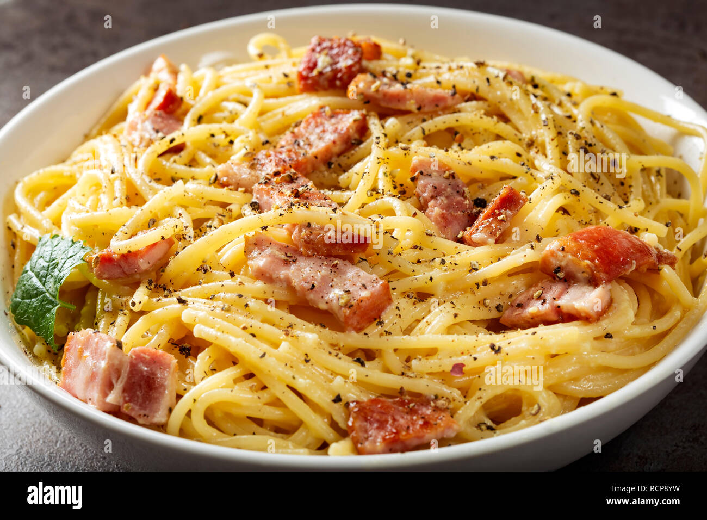

Spaghetti Carbonara
Ingredients

- 12 ounces spaghetti
- 2 large eggs
- 1 cup grated Parmesan cheese
- 4 ounces pancetta or bacon, diced
- 2 cloves garlic, minced
- Salt and pepper to taste
- Fresh parsley, chopped (for garnish)
Instructions
- Bring a large pot of salted water to a boil. Cook the spaghetti according to package instructions until al dente. Reserve 1 cup of pasta water, then drain the pasta.
- In a large bowl, whisk together the eggs and Parmesan cheese until well combined.
- In a large skillet, cook the pancetta or bacon over medium heat until crispy. Add the minced garlic and cook for another minute.
- Add the cooked spaghetti to the skillet and toss to combine. Remove from heat.
- Quickly pour the egg and cheese mixture over the pasta, stirring vigorously to create a creamy sauce. Add reserved pasta water a little at a time to achieve desired consistency.
- Season with salt and pepper to taste. Garnish with chopped parsley and serve immediately.
Vegetarian Stir Fry
Ingredients
.jpg)
- 2 tablespoons vegetable oil
- 1 bell pepper, sliced
- 1 zucchini, sliced
- 1 cup broccoli florets
- 1 carrot, julienned
- 2 cloves garlic, minced
- 1 tablespoon ginger, minced
- 1/4 cup soy sauce
- 1 tablespoon hoisin sauce
- 1 tablespoon sesame oil
- Cooked rice or noodles (for serving)
- Sesame seeds and green onions (for garnish)
Instructions
- Heat the vegetable oil in a large skillet or wok over medium-high heat.
- Add the bell pepper, zucchini, broccoli, and carrot to the skillet. Stir fry for 4-5 minutes, until the vegetables are tender but still crisp.
- Add the garlic and ginger and cook for another minute.
- In a small bowl, whisk together the soy sauce, hoisin sauce, and sesame oil. Pour the sauce over the vegetables and toss to coat.
- Cook for another 2-3 minutes, until the sauce is heated through and thickened.
- Serve the stir fry over cooked rice or noodles. Garnish with sesame seeds and green onions.